Online exhibition
In Time of Sorrow
“In Time of Sorrow” looks at two traditions of mourning in two different geographical points. Different in time, venue and gender. The all-feminine tradition of “Chehel-Menbar” in Lorestan’s Khorramabad and the all-masculine tradition of “Gel-Giran” in Bijar, Kordestan. One in silence and the other in roaring. Women who resort to candles and men who resort to mud and soil.
- ExhibitionPhotography
- TraditionsChehel-Menbar, Khorramabad · Gel-Giran, Bijar
- Works15 photographs
- WhereOnline · Sobhan Gallery
StatementAbout the exhibition
Mourning is a process that its driving center is based on an eternal / perpetual statement: “loss”. The subject is out of sight which only can be traced in sayings and mentalities with very unlikely possibility of understanding its presence. The process kicks off upon a calendar setting, memories and memos highlighted, mundane and daily concerns lose significance and the “mourner” sets foot on the path of “self-forgetting”. Detaches herself from mundane concerns and steps out of herself in a way that barely one could say it is her or not! Takes out previous clothes and hides herself in veil, sometimes seals her lips in silence and some other time outpours in shouts. Always a cycle repeats itself, a process of inwarding and outwarding, getting calm and again outpouring and roaring with stronger emotions on the loss of the “present deceased”.
Some veiled women, with sealed lips in silence, similar and dissimilar to their everyday life, hand in hand move from house to house and light candles. A bit further you see men clad in mourning cloth and with muddy make-up beat themselves lamenting and groaning something between eulogy and whining! They find themselves quite detached from their everyday life and stranger to themselves and others so that to unite with the one who exists and exist not at the same time. The one whose presence has filled up their minds and his loss has broken their hearts! And his memories won’t last except with the mourning. They come and go and all of a sudden everything is brought to a stop and that’s the moment the presence of “the present deceased” stands out and catches everybody in awe. This is the moment photo starts. Women in a background of hundreds of years of worship and the men who have set their eyes to the heavens, all pursue “the presence” and mourn the “loss” drowned in sorrow. Sometime as rosy-fingered dawn and some other time as colorful as grandmother praying gown!
Chehel-MenbarThe women’s mourning · Khorramabad, Lorestan · 8 photographs

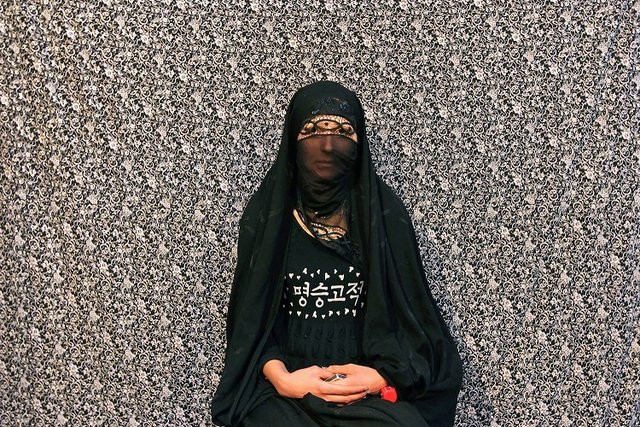

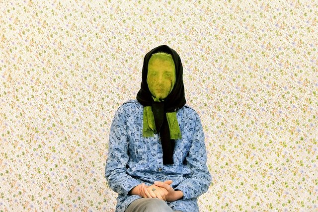

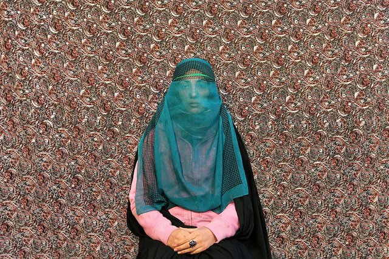

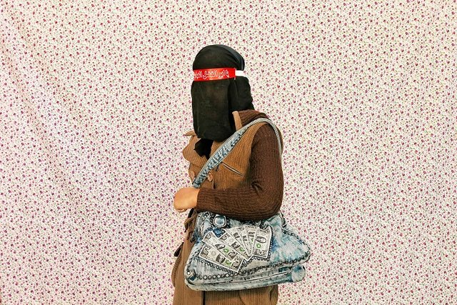

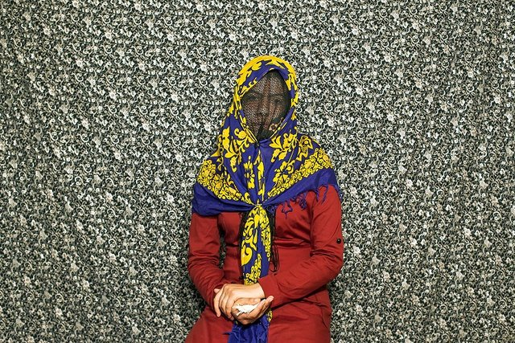

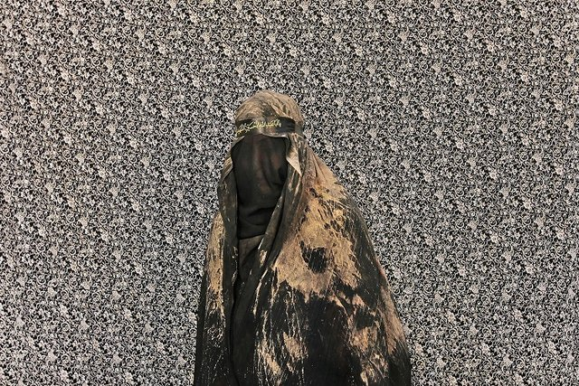

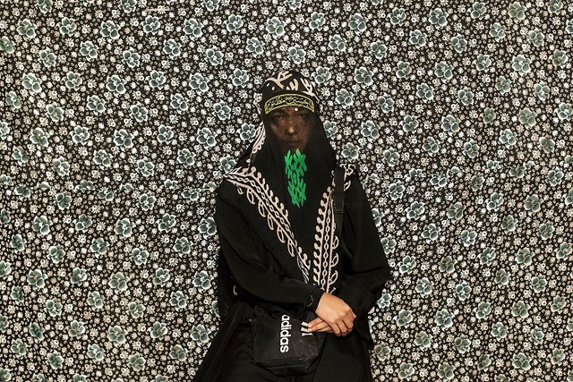

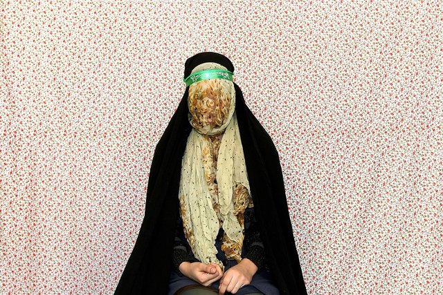
Gel-GiranThe men’s mourning · Bijar, Kordestan · 7 photographs


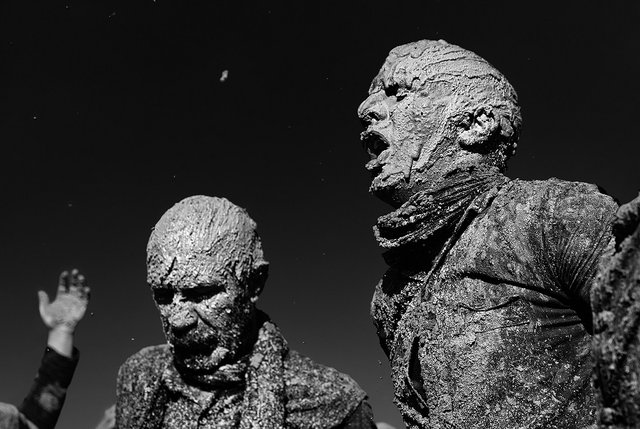

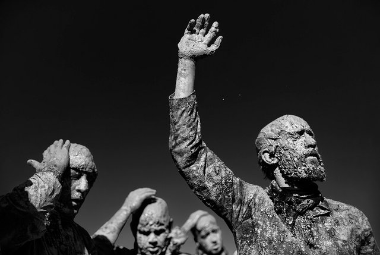

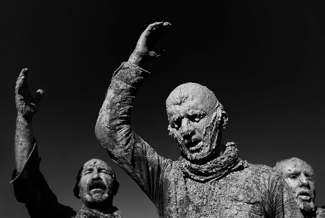

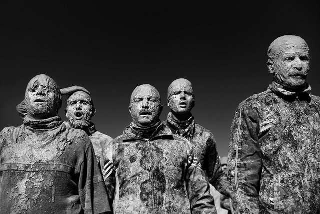

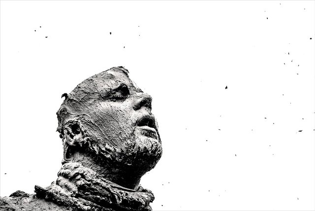

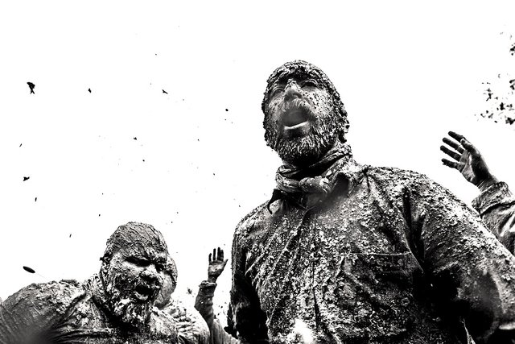